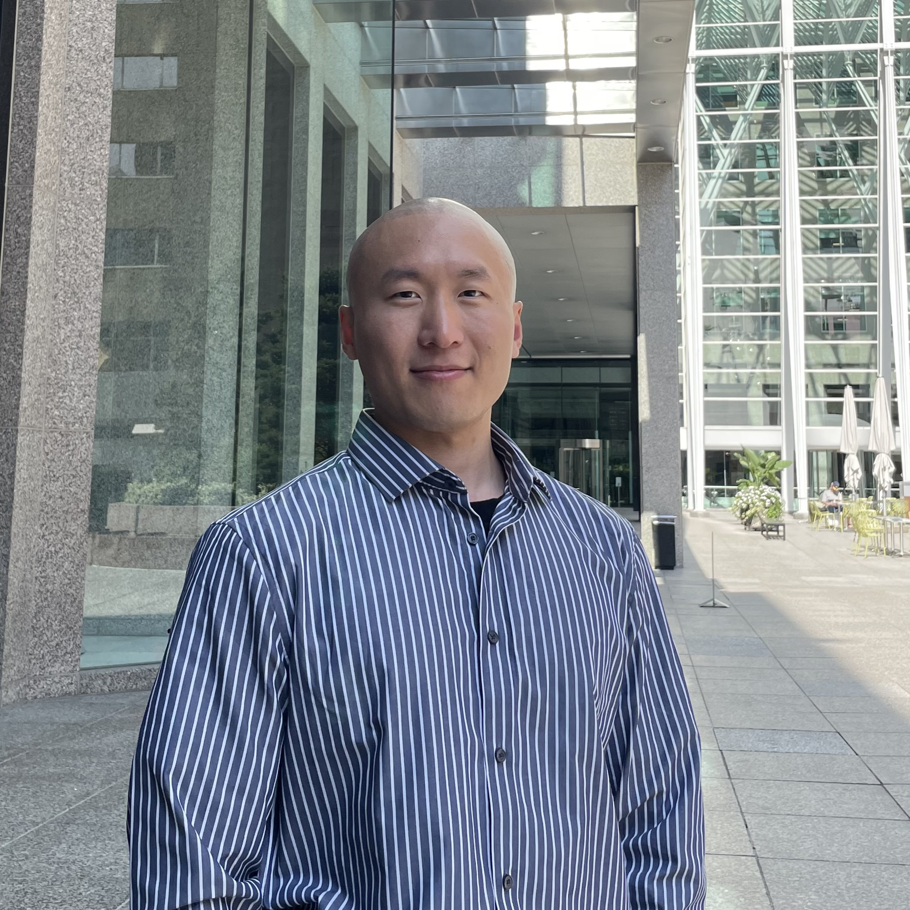

IT Specialist. Developer. Big Data award winner.
A unique blend of naval discipline, engineering insight, and IT expertise.

Served in the ROK Navy. Engineered EV batteries. Built software for U.S. police. Now leads IT at a public library. Some careers have a clear theme. This one has range.
I'm Ryan Lee — an IT Specialist leading technology at Halton Hills Public Library. My path is a bit unconventional: I started with a B.Eng in Mechanical Engineering & Robotics, served as a Navy Petty Officer, then pivoted fully into software and IT.
At Algonquin College I earned a 3.97 GPA and a spot on the Dean's Honour List, then joined Versaterm to build Record Management Systems for U.S. police agencies. Along the way, I won a Big Data competition for using OpenCV and GIS to tackle traffic accidents in Seoul.
I'm drawn to systems that actually matter — whether it's a CCTV warning system preventing alley accidents, or a library server that thousands of people depend on daily.
Hover any skill to see related projects.
Click any role to expand.